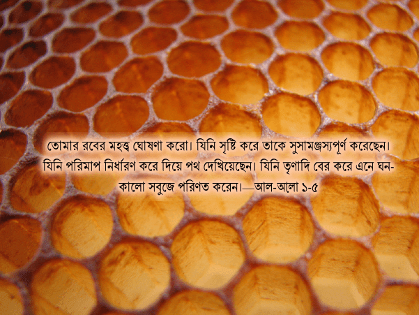
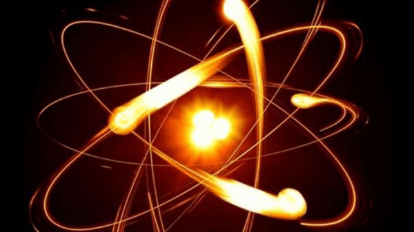
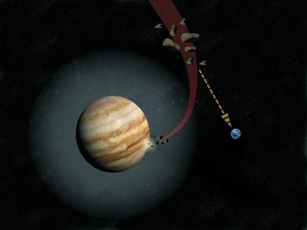
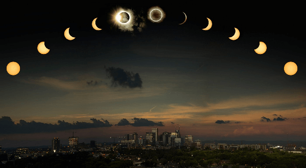
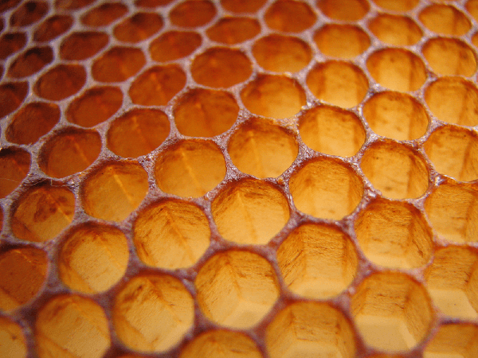
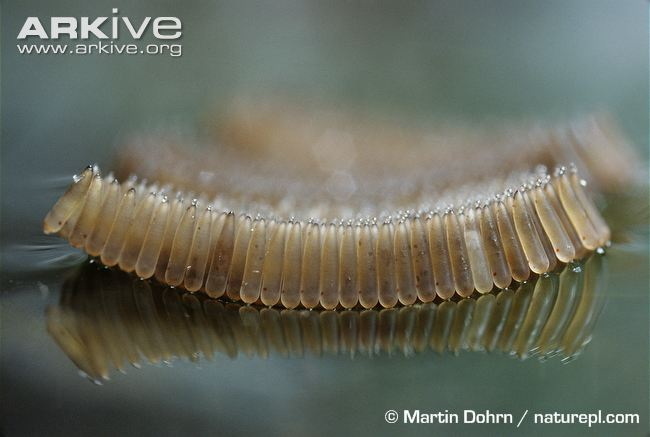
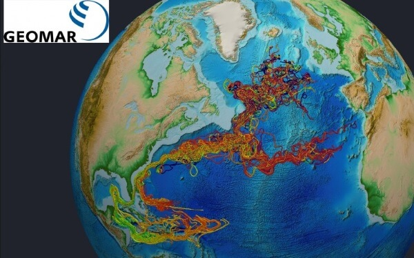
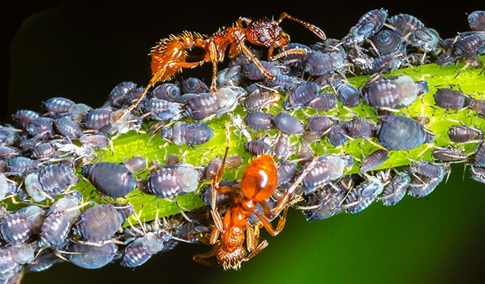

তোমার রবের মহত্ত্ব ঘোষণা করো। যিনি সৃষ্টি করে তাকে সুসামঞ্জস্যপূর্ণ করেছেন। যিনি পরিমাপ নির্ধারণ করে দিয়ে পথ দেখিয়েছেন। যিনি তৃণাদি বের করে এনে ঘন-কালো সবুজে পরিণত করেন।—আল-আ়লা ১-৫

আল্লাহ تعالى প্রতিটি সৃষ্টির ক্বদর অর্থাৎ পরিমাণ নির্ধারণ করে দিয়েছেন এবং তারপর তিনি তাকে হুদা অর্থাৎ পথ দেখিয়েছেন। মহাবিশ্বের প্রতিটি পরমাণুর মধ্যে ইলেকট্রন এবং প্রোটনের চার্জ সমান এবং বিপরীত করে দিয়েছেন, যেন ইলেকট্রন পরমাণু ছেড়ে চলে না যায়। আবার এরা যেন একে অন্যকে আকর্ষণ করে একসাথে লেগে ধ্বংস হয়ে না যায়, সেজন্য তিনি এদের মধ্যে নিখুঁত পরিমাণে বিকর্ষণ বল দিয়েছেন, যা এদেরকে একে অন্যের থেকে দূরে রাখে।

চিত্র: পরমাণুর ভেতরে প্রোটন এবং ইলেকট্রন (কাল্পনিক)
প্রতিটি কোষ নিখুঁতভাবে তিনি تعالى তৈরি করেছেন, যেন তা থেকে একটি পূর্ণ উদ্ভিদ বা প্রাণী তৈরি হতে পারে। একটু পুরো মানুষ তৈরি করার ডিজাইন সংরক্ষণ করা আছে মানুষের একটি কোষের মধ্যে। মহাবিশ্বের সবচেয়ে জটিল যন্ত্র ‘মানব মস্তিষ্ক’ তৈরি করার অকল্পনীয় জটিল ব্লু-প্রিন্ট রাখা আছে খালি চোখে দেখা যায় না এমন ক্ষুদ্র কোষের ডিএনএ-তে।
আমাদের সৌরজগতে তিনি تعالى সূর্য, পৃথিবী এবং চাঁদকে সূক্ষ্ম ভারসাম্য বজায় রেখে একদম জায়গা মত রেখেছেন, যেন পৃথিবীতে বসবাসের যোগ্য তাপমাত্রা, আবহাওয়া, খনিজ পদার্থের চক্র বজায় থাকে এবং প্রচুর পরিমাণে প্রাণের বিকাশ ঘটতে পারে। পৃথিবীকে তিনি নিখুঁতভাবে একটু হেলে দিয়েছেন, যেন ঋতুর পরিবর্তন হয়, যা পৃথিবীকে একদিন মানুষ আসার জন্য উপযোগী করে গড়ে তুলবে।
চাঁদকে তিনি যথাযথ আকৃতিতে সঠিক দূরত্বে রেখেছেন, যেন চাঁদের মাধ্যমে আমরা মাসের হিসেব করতে পারি এবং একইসাথে এটি পৃথিবীতে জোয়ার, ভাটা এবং প্লেট টেক্টনিক্স সচল রাখে এবং পৃথিবী যেন লাটিমের মত হেলেদুলে ঘুরে চরম আবহাওয়া তৈরি না করে।[৩৩১] বৃহস্পতি গ্রহকে তিনি সঠিক জায়গায় সঠিক আকৃতিতে রেখেছেন, যেন তা সৌরজগতের ভেতরে এবং বাইরে থেকে আসা পৃথিবীমুখী হাজার হাজার ধ্বংসাত্মক ধূমকেতু এবং উল্কা নিজের কাছে নিয়ে পৃথিবীকে রক্ষা করে। এই সবকিছুই দরকার মানুষের মত একটি প্রাণ যেন একদিন পৃথিবীতে আসতে পারে এবং কোটি বছর টিকে থাকতে পারে।

চিত্র: বৃহস্পতি গ্রহ পৃথিবীকে রক্ষা করে
চাঁদের কারণে যে পূর্ণ সূর্য গ্রহণ হয়, সেটা একটা বিরাট ব্যাপার। সূর্যের ব্যাস চাঁদের থেকে প্রায় ৪০০গুণ বেশি। যদি সূর্য চাঁদের থেকে প্রায় ৪০০ গুণ দূরে না থাকতো, তাহলে আকাশে সূর্য এবং চাঁদের আকৃতি প্রায় সমান হতো না এবং কোনোদিন পূর্ণ সূর্য গ্রহণ হতো না। সূর্য এবং চাঁদের আকৃতি এবং দূরত্ব এত নিখুঁত অনুপাতে আল্লাহ تعالى রেখেছেন দেখেই পূর্ণ সূর্য গ্রহণের সময় চাঁদ সূর্যকে একদম সঠিক মাপে ঢেকে ফেলে।

চিত্র: পূর্ণ সূর্য গ্রহণের ধারাবাহিক চিত্র
আমরা যেদিকেই তাকাই, অতি ক্ষুদ্র পরমাণু থেকে শুরু করে অকল্পনীয় বিশাল ছায়াপথ —সবদিকেই আমরা নিখুঁত পরিমাপ দেখতে পাই।
আল্লাহ تعالى একইসাথে বলছেন যে, তিনি সবকিছুকে পথ দেখান। তিনি تعالى সৃষ্টি করেই ছেড়ে দেননি, সৃষ্টিকে তিনি পথ দেখিয়েছেন। কীভাবে তিনি تعالى সৃষ্টিকে পথ দেখান?
Abraham Cressy Morrison, নিউইয়র্ক একাডেমী অফ সাইন্স-এর প্রাক্তন প্রেসিডেন্ট, তার Man does not stand alone বইয়ে অনেকগুলো বিস্ময়কর প্রাকৃতিক ঘটনার উদাহরণ দিয়েছেন[৪১৯]—
পাখিদের মধ্যে নীড়ে ফেরার একটি প্রবণতা আছে। যেই রবিন পাখিটি আমাদের ঘরের চালে বাসা বানায়, সেই পাখিটি শীতকালে হাজার মাইল পাড়ি দিয়ে দক্ষিণে উষ্ণ অঞ্চলে চলে যায়। তারপর ঠিকই পাখিটি বসন্তকালে একদম ঘরের চালে তার নিজের বাসায় ফিরে আসে। হাজার মাইল পথ পাড়ি দিয়ে রাস্তা চিনে ফিরে আসার পদ্ধতি কে তাকে শেখালো?[৪১৯]
কবুতর অনেক সময় শব্দদূষণের কারণে পথ হারিয়ে ফেললেও, তারপর সেটা যেখানেই থাকুক না কেন, আবার ঠিক তার বাসায় ফিরে যেতে পারে। মৌমাছি হাজার গাছপালা, ঝোপঝাড়ের মধ্যে দিয়ে উড়ে গিয়ে ফুলের রস নিয়ে আবার ঠিকই তার মৌচাক খুঁজে পায়। আজকে আমরা ম্যাপ, মোবাইল ফোনের সাহায্য নিয়ে পথ চিনে নেই। কিন্তু এই কাজ লক্ষ বছর ধরে প্রাণীজগতে বহু প্রাণী করে আসছে। কে শেখালো এদেরকে রাস্তা চিনে ফেরা আসার এই পদ্ধতি, যা মানুষও প্রযুক্তির সাহায্য ছাড়া নিজেরা করতে পারে না?[৪১৯]
আকাশে উঁচুতে উড়ে বেড়ানো পাখি শত ফুট উঁচু থেকেও ঘাসের মধ্যে লুকিয়ে থাকা পোকা, ইঁদুর দেখতে পেয়ে ঝাপ দিয়ে নেমে এসে ধরে ফেলে। মানুষ সম্প্রতি বাইনোকুলার আবিষ্কার করে যেই কাজ করতে পেরেছে, লক্ষ বছর আগে থেকেই প্রকৃতিতে বাইনোকুলার সমৃদ্ধ চোখ বহু প্রাণীর মধ্যে রয়ে গেছে। চোখের লেন্সকে এক বিশেষ ভঙ্গিমায় রাখলে তা দিয়ে বহু দুরের জিনিস দেখা যায়, এই বিদ্যা পাখিকে কে শেখালো?[৪১৯]
ঘুটঘুটে অন্ধকারের মধ্যে যদি ঘোড়াকে ছেড়ে দিয়ে আসা হয়, এটি ঠিকই রাস্তা ধরে হেটে যেতে পারে। রাস্তা এবং তার দুইপাশের তাপমাত্রার সূক্ষ্ম পার্থক্য এর চোখ ধরতে পারে। যে কারণে কোনো দৃশ্যমান আলো না থাকলেও, এটি ইনফ্রারেড তরঙ্গ দেখে রাস্তা বুঝে নিতে পারে। পেঁচা ঘুটঘুটে অন্ধকারের মধ্যেও বহু দূরে লুকিয়ে থাকা ইঁদুরের গায়ের তাপ থেকে বের হওয়া ইনফ্রারেড আলো দেখে উড়ে গিয়ে নিখুঁত নিশানা করে শিকার করতে পারে। মানুষ সম্প্রতি ইনফ্রারেড চশমা আবিষ্কার করেছে, যা লক্ষ বছর আগে থেকেই প্রকৃতিতে ছিল। এই প্রাণীগুলো কীভাবে ইনফ্রারেড তরঙ্গ দেখে তা বোঝার জ্ঞান পেলো?[৪১৯]
মৌমাছিরা তিন ধরনের বিশেষ কক্ষ তৈরি করে— কর্মী মৌমাছিদের জন্য ছোট কক্ষ, পুরুষদের জন্য বড় কক্ষ এবং রাণীর জন্য বিশেষ কক্ষ। এই তিন ধরনের কক্ষ তৈরি করার ডিজাইন এরা কার কাছ থেকে শিখল? এই কর্মী মৌমাছিরা নতুন প্রজন্ম আসার আগেই বিশেষভাবে ফুলের রেণু এবং রস চিবিয়ে, অর্ধেক হজম করে পেটে জমা করে রাখে। তারপর বাচ্চাদেরকে সেই অর্ধেক হজম করা খাবার খেতে দেয়, কারণ বাচ্চারা সরাসরি রেণু এবং ফুলের রস খেতে পারে না। তারপর যখন বাচ্চাগুলো কিছুটা বড় হয়, তখন কর্মী মৌমাছিরা এই চিবানোর কাজ বন্ধ করে দেয় এবং তারপর থেকে শুধু মধু এবং রেণু খায়। বাচ্চাদেরকে অর্ধেক হজম করা খাবার দিতে হবে, না হলে বাচ্চারা মারা যাবে, এই জ্ঞান মৌমাছিকে কে দিল? যদি একদম প্রথম প্রজন্মের মৌমাছির মধ্যে এই জ্ঞান না থাকতো, তাহলে তো মৌমাছি এক প্রজন্ম পরেই বিলুপ্ত হয়ে যেত। তাহলে এই জ্ঞান একদম প্রথম মৌমাছি কীভাবে পেয়েছিল?[৪১৯]
মৌমাছি যখন ফুলের রস, রেণু নিয়ে বাসায় ফিরে আসে, তখন সেটি এক বিশেষ নাচ এবং সাংকেতিক শব্দ তৈরির মাধ্যমে অন্য মৌমাছিদেরকে জানিয়ে দেয় যে, চাক থেকে বের হয়ে সামনের আম গাছের পর ডানে মোড় নিয়ে, করল্লা গাছের নিচে দিয়ে একটি সুরঙ্গ ধরে দশফুট উড়ে গিয়ে, তারপর বায়ে মোড় নিয়ে একটি লাউ ঝাড়ের ভেতর দিয়ে পাঁচফুট গিয়ে, ডানে মোড় নিলেই অনেকগুলো ফুল পাওয়া যাবে, যেগুলোতে এখনো যথেষ্ট রস এবং রেণু আছে। এত নিখুঁতভাবে উড়ার পথ মনে রাখা এবং তা এত নিখুঁতভাবে অন্য মৌমাছিদেরকে জানিয়ে দেওয়ার ভাষা তাকে কে শেখালো?[৪২১]
শুধু তাই না, মৌমাছির চাকের ডিজাইন স্থাপত্যবিদদের জন্য এক বিস্ময়। মৌচাক তৈরি হয় ষড়ভুজ আকৃতির অনেকগুলো মোমের তৈরি ফাঁপা স্তম্ভ একসাথে জোড়া দিয়ে। এই স্তম্ভগুলো মধু ধারণ করে রাখে। এখন, মৌমাছি কেন বৃত্তাকার, ত্রিভুজ, চতুর্ভুজ বা পঞ্চভুজ স্তম্ভ না বানিয়ে ষড়ভুজ স্তম্ভ তৈরি করে? যদি সবচেয়ে কম জায়গায় সবচেয়ে বেশি মধু রাখাই উদ্দেশ্য হতো, তাহলে তো বৃত্তাকার স্তম্ভ তৈরি করলেই সবচেয়ে ভালো হতো। বিস্ময়কর ব্যাপার হলো, ষড়ভুজ স্তম্ভ তৈরি করতে মোম খরচ পড়ে সবচেয়ে কম। একইসাথে স্তম্ভগুলোর মাঝখানে কোনো ফাঁকা জায়গা থাকে না, যার কারণে স্তম্ভগুলোর দেওয়াল একে অন্যের সাথে লেগে থাকে। একারণেই মৌচাক এত টেকসই হয়। ষড়ভুজ হচ্ছে সবচেয়ে কম মোম খরচে, সবচেয়ে মজবুত এবং সবচেয়ে বেশি মধু ধরে রাখার জন্য উপযুক্ত জ্যামিতিক আকৃতি।[৪২২][৪২৩

চিত্র: মৌচাকের ষড়ভুজ মধুর স্তম্ভ
আর মৌমাছি শুধু ষড়ভুজই তৈরি করে না, সেই ষড়ভুজের প্রত্যেকটি বাহুর দৈর্ঘ্য হুবহু একই। শুধু তাই না, হাজার হাজার মৌমাছি প্রত্যেকে নিজের মত স্তম্ভ তৈরি করে। একে অন্যের জন্য অপেক্ষা করে না। কিন্তু তারপরেও তারা প্রত্যেকে একই আকৃতির ষড়ভুজের প্রতিটি বাহু সমান করে স্তম্ভ তৈরি করে। এই বিস্ময়কর জ্যামিতিক জ্ঞান এবং একসাথে কাজ করার শৃঙ্খলা মৌমাছিকে কে শেখালো? [৪২২][৪২৩]
মৌচাকের ষড়ভুজ ডিজাইন অনুসরণ করে আজকে মানুষ ভূমিকম্প প্রতিরোধক বাড়ি তৈরি করছে। মানুষ যে চতুর্ভুজ আকৃতির বাড়ি তৈরি করে, তার থেকে ষড়ভুজ অনেক বেশি ভূমিকম্প প্রতিরোধক। মৌমাছি কোথা থেকে এই স্থাপত্যবিদ্যার জ্ঞান পেলো?[৪২৪] সবচেয়ে কম খরচে, সবচেয়ে টেকসই এবং স্বল্প জায়গার সবচেয়ে ভালো ব্যবহার হয় ষড়ভুজ আকৃতির বাড়ি তৈরি করলে। এধরনের বাড়ির ডিজাইন করে দুইজন স্থপতি পরিবেশ বান্ধব ডিজাইনের প্রতিযোগিতায় জয়ী হয়েছেন।[৪২৫] একইসাথে শরণার্থীদের জন্য সবচেয়ে কম সময়ে, সবচেয়ে কম জায়গা খরচ করে, টেকসই এবং তাদের ব্যক্তিগত গোপনীয়তা রক্ষা করে বাড়ির ডিজাইন করা যায় এই ষড়ভুজ আকৃতির বাড়ি বানিয়ে।
চিত্র: ষড়ভুজ আকৃতির বাড়ি
মশা প্রকৃতির আরেক বিস্ময়। যখন ডিম পারার দরকার হয়, তখন সঠিক তাপমাত্রা এবং জলীয় বাষ্প আছে এমন জায়গা মশা খুঁজে বের করতে পারে। মশার পেটের কাছে তাপমাত্রা এবং জলীয় বাষ্প মাপার অঙ্গ রয়েছে।[৪৩০] কীভাবে মশা জানতে পারল যে, একটি নির্দিষ্ট তাপমাত্রা এবং জলীয় বাষ্পে তার ডিমগুলো সবচেয়ে ভালোভাবে বেঁচে থাকতে পারবে? তাপমাত্রা এবং জলীয় বাষ্পের এই ধারণা তাকে কে শেখালো?
চিত্র: ইলেকট্রন মাইক্রোস্কোপে মশা
মশার ডিমগুলো তার চারপাশের অবস্থা অনুকূল না হলে ডিম ভেঙে মশার বাচ্চা বের করে দেয় না।[৪২৬] কীভাবে একটা ডিম তার চারপাশের অবস্থা প্রতিকূল কি না তা বুঝতে পারে? ডিমের মধ্যে এই ‘বুদ্ধিমত্তা’ কে দিল? মশা তার ডিমগুলো পাড়ার পর সেগুলোকে একসাথে লাগিয়ে একটা ভেলার আকৃতি দেয়। এর ফলে ডিমগুলো একসাথে লেগে থেকে পানিতে ভেসে থাকতে পারে, পানির স্রোতে হারিয়ে যায় না। ডিমগুলোকে যদি চাপ দিয়ে পানির ভেতরে ঢুকিয়ে দেওয়া হয়, তাহলেও এটি মুহূর্তের মধ্যে ভেসে ওঠে এবং ঠিক যেদিকটা উপরের দিকে ছিল, সেটাই উপরে থাকে।[৪২৭] ডিমগুলো একটি ভেলার আকৃতি দিলে যে সেটা সবচেয়ে ভালোভাবে ভেসে থাকতে পারবে, চারকোণা, বা গোলাকৃতি হলে যে পারবে না, তারপর ডিমের নীচে যে একটু ফাঁকা জায়গায় বাতাস আটকে রাখলে তা পানিতে ডুবে যাবে না—এই প্রকৌশল জ্ঞান মশাকে কে শেখালো?

চিত্র: মশার ডিমের ভেলা
ইউরোপ, আমেরিকার হাজারো নদীনালা, খালবিলে থাকা ইল পূর্ণবয়স্ক হওয়ার পর সবাই ঝাঁকে ঝাঁকে হাজারো মাইল সাঁতরে বারমুডার অতল গহীন সমুদ্রে চলে যায়। সেখানে তারা বাচ্চা জন্ম দেয়, তারপর মারা যায়। এই বাচ্চাগুলো সেই অতল গহীন সমুদ্র ছাড়া আর কিছুই কখনো দেখেনি। কিন্তু এরাই একসময় হাজার মাইল লম্বা ভ্রমণ শুরু করে তাদের বাবা-মা যেই নদী, খাল, বিল থেকে এসেছিল, ঠিক সেই নদী, খাল, বিলে ফিরে আসে। এই বাচ্চাগুলো সমুদ্রের ভীষণ স্রোত, ঝড়, জলোচ্ছ্বাস, হাজারো প্রতিকূলতা পাড়ি দিয়ে হাজার মাইল সাঁতরে ঠিকই বাবা-মার ভিটেমাটিতে ফিরে আসে। সেখানে তারা বড় হয়। তারপর পূর্ণবয়স্ক হওয়ার পর বারমুডা যাওয়ার যাত্রা শুরু করে। কোনোদিন কোনো আমেরিকান ইল ইউরোপের পানিতে ধরা পড়েনি। কোনো ইউরোপিয়ান ইলকে কখনো আমেরিকার পানিতে দেখা যায়নি। শুধুই কিছু অণু-পরমাণু দিয়ে যদি ইল তৈরি হয়, তাহলে ইল-এর মধ্যে এই দিকনির্দেশনা এবং এত বড় যাত্রা করার ইচ্ছাশক্তি আসল কীভাবে?[৪১৯]

চিত্র: ইল-এর বারমুডা থেকে ইউরোপে যাত্রা
প্রতিটি প্রাণ কোষ দিয়ে তৈরি। কোষগুলো বিভাজনের মাধ্যমে সংখ্যা বৃদ্ধি করে। নিজেদেরকে সময় মত, জায়গা মত পরিবর্তন করে বিভিন্ন অঙ্গের জন্ম দেয়। কীভাবে মানুষের ডান কানের কোষগুলো জানে যে, সে ডান কানের ঠিক কোন জায়গায় আছে এবং এখন তাকে কোনদিকে মোড় নিতে হবে, যেন কানের ভাঁজ সঠিকভাবে তৈরি হয়? বাম কানের কোষ কীভাবে জানে যে, তাকে ডান কানের বিপরীত দিকে মোড় নিতে হবে? কীভাবে আঙ্গুলের ডগার কোষগুলো জানে যে, সে আঙ্গুলের ডগায় আছে, এখন তাকে পরিবর্তন হয়ে নখের মত শক্ত কোষে পরিণত হতে হবে?
মানুষ যখন মায়ের গর্ভে থাকে, তখন কীভাবে দুইশ কোটি তিন লক্ষ পঁয়ষট্টিতম কোষটি সিদ্ধান্ত নেয় যে, তাকে এই জায়গা থেকে একটি কিডনি তৈরি করা শুরু করতে হবে? কে কিডনির কোষগুলোকে বলে যে, যথাযথ আকৃতিতে কিডনি তৈরি করা শেষ, এখন থামো, আর বড় করার দরকার নেই? একটি কোষ কোথায় আছে, কী অবস্থায় আছে, এর পর তাকে কী করতে হবে, তার অবস্থান অনুসারে ডিএনএ-এর কোন অধ্যায়গুলো বাদ দিয়ে যেতে হবে, কোন অধ্যায়গুলো অনুসারে কাজ করতে হবে —এত কিছু উপলব্ধি করার মত অত্যন্ত জটিল যন্ত্রাদি এবং সিদ্ধান্ত নেওয়ার ক্ষমতা[৪২৮] এত ছোট জায়গায় কীভাবে তৈরি হলো?

চিত্র: মানুষের চামড়ার কোষ
কিছু প্রজাতির পিঁপড়া মাশরুম চাষ করে। এদের ঢিবির ভেতরে তারা মাশরুমের জন্য যথাযথ তাপমাত্রা এবং আদ্রতা বজায় রেখে মাশরুমের বাগান গড়ে তোলে। একই সাথে এরা শুঁয়ো পোকা এবং উকুনের ফার্ম তৈরি করে, যেভাবে কিনা মানুষ গরু, ছাগলের ফার্ম তৈরি করে। এই পোকাগুলো থেকে এরা মধুর মত এক ধরনের খাবার সংগ্রহ করে নিজেরা খায়। পিঁপড়ের মত একটা ক্ষুদ্র প্রাণীকে কৃষিবিদ্যা এবং পশুপালন শেখালো কে?[৪১৯]

চিত্র: পিপড়ার উকুন পালন
—প্রকৃতিতে এরকম হাজার হাজার ঘটনা দেখে স্বাভাবিকভাবেই প্রশ্ন আসে যে, সবকিছু তো অণু-পরমাণু দিয়ে তৈরি, কিন্তু অণু-পরমাণুর ভেতরে তো কোনো জ্ঞান নেই? কোটি কোটি অণু, পরমাণু একসাথে করলেও জটিল জ্ঞান তৈরি হয় না। তাহলে এইসব জটিল জ্ঞানের উৎস কী?
উত্তর একটাই— একজন বুদ্ধিমান স্রষ্টা থাকতে বাধ্য, যিনি শুধু অণু, পরমাণু দিয়ে জীব সৃষ্টি করেন না, একইসাথে তিনি তাদেরকে জ্ঞান দেন, পথ দেখিয়ে দেন।
তোমার রবের মহত্ত্ব ঘোষণা করো। যিনি সৃষ্টি করে তাকে সুসামঞ্জস্য করেছেন। যিনি পরিমাপ নির্ধারণ করে দিয়ে পথ দেখিয়েছেন।
যিনি তৃণাদি বের করে এনে ঘন-কালো সবুজে পরিণত করেন।
এখানে আল্লাহ تعالى বলছেন যে, তিনি তৃণাদি শুধু বের করেই আনেন না, একই সাথে সেটিকে ঘনকালো সবুজে পরিণত করেন। সবুজ গাছপালা পৃথিবীতে প্রাণ টিকে থাকার জন্য অপরিহার্য। এটি আমাদেরকে অক্সিজেন দেয়। বাতাস থেকে কার্বন-ডাই-অক্সাইড সরিয়ে ফেলে। প্রকৃতিকে ঠান্ডা রাখে। মাটির ক্ষয় রোধ করে। মানুষ সহ হাজারো পশুপাখির খাবারের ব্যবস্থা করে। একই সাথে বৃষ্টির চক্র বজায় রাখে। সবুজ তৃণাদি না থাকলে পৃথিবীতে কোনো প্রাণ টিকে থাকতে পারত না।
অনেকে এই আয়াতের অনুবাদ করেছেন যে, আল্লাহ تعالى তৃণাদিকে ধূসর, আবর্জনায় পরিণত করেন। এর কারণ হলো আরবিতে যে غثاء শব্দটি রয়েছে তার একটি অর্থ হল ধূসর, বর্জ্য, বন্যার পানির উপরে জমে থাকা ফেনায়িত ময়লা ইত্যাদি। আবার একই শব্দ প্রাচীন আরবি কবিতায় ঘন-কালো সবুজ তৃণাদি বোঝাতেও ব্যবহার করা হয়। কিন্তু আরবিতে কখনো أحوى শব্দটি ধূসর বা মৃত কোনো কিছুর সাথে ব্যবহার হয় না, বরং সবুজাভ কালো বা লালাভ কালো কিছু, যা সজীব, টাটকা, উর্বর —এমন কিছুর সাথে ব্যবহার হয়। যেমন আগেকার দিনে আরবি কবিতায় প্রাণবন্ত, শক্তিশালী যুবকদের বেলায় এই শব্দটি ব্যবহার হতো। কারণ তাদের সুস্বাস্থের জন্য এবং পর্যাপ্ত রক্ত থাকার জন্য তাদের ঠোঁটের রঙ লালাভ কালো হতো। একারণে যদি আয়াতে বিশেষ্য এবং বিশেষণের মধ্যে মিল রাখতে হয়, তবে غثاء أحوى শব্দটির অর্থ হবে, ঘন-কালো সবুজ।[৭]
[৪১৯] Morrison, A. Cressy(1864) “Man does not stand alone” https://archive.org/details/mandoesnotstanda00morr
[৪২০] What do “fine-tuning” and the “multiverse” say about God?. (2018). BioLogos. Retrieved 23 July 2018, from https://biologos.org/common-questions/gods-relationship-to-creation/fine-tuning
[৪২১] Wenner, Adrian M. (1962).”Sound production during the waggle dance of the honey bee.” Animal Behaviour 10(1-2): 79-95. <http://hdl.handle.net/2027.42/32329>
[৪২২] ROBERT KRULWICH (2013). “What Is It About Bees And Hexagons?” http://www.webcitation.org/717Kh0Llf
[৪২৩] Philip Ball (2016). “The geometric rules behind fly eyes, honeycombs, and soap bubbles.” http://www.webcitation.org/717KhS35N
[৪২৪] 王浩旻 (2008) “Hexagonal honeycomb aseismic building frame structure” https://patents.google.com/patent/CN201326226Y/en
[৪২৫] Irina Vinnitskaya (2011) “Design Against the Elements Green Design Award Winner / Nikola Enchev and Stefan Vankov” http://www.webcitation.org/717LCHdmH
[৪২৬] Impoinvil, D. E., Cardenas, G. A., Gihture, J. I., Mbogo, C. M., & Beier, J. C. (2007). Constant Temperature and Time Period Effects on Anopheles Gambiae Egg Hatching. Journal of the American Mosquito Control Association, 23(2), 124–130.
[৪২৭] Christophers, S. R. (1945), STRUCTURE OF THE CULEX EGG AND EGG RAFT IN RELATION TO FUNCTION (DIPTERA). Transactions of the Royal Entomological Society of London, 95: 25-34. doi:10.1111/j.1365-2311.1945.tb00260.x
[৪২৮] Lander, A. D. (2013). How Cells Know Where They Are. Science (New York, N.Y.), 339(6122), 923–927. http://doi.org/10.1126/science.1224186
[৪২৯] How Mosquitoes Detect People. (2015). National Institutes of Health (NIH). Retrieved 23 July 2018, from https://www.nih.gov/news-events/nih-research-matters/how-mosquitoes-detect-people
[৪৩০] Tauxe, G. M., MacWilliam, D., Boyle, S. M., Guda, T., & Ray, A. (2013). Targeting a dual detector of skin and CO2 to modify mosquito host seeking. Cell, 155(6), 1365–1379. http://doi.org/10.1016/j.cell.2013.11.013